О пријемном испиту
Структура теста
12 задатака × до 20 бодова = 240 бодова. Подзадаци А, Б, В, Г са различитим бодовима. Редослед решавања је произвољан.
Трајање
120 минута. Дозвољено: графитна оловка, гумица, лењир, шестар, калкулатор (само основне операције). Мобилни — није дозвољен.
Правила бодовања
„Прикажи поступак" → без поступка = 0 бодова. Само хемијска оловка за финалне одговоре. Два решења (тачно + нетачно) → 0 бодова.
Овај сајт
Кликни на задатак да га отвориш. Одговори на питање — тек онда ће се приказати тачан одговор и поступак. Задатак 1 увек = просторна визуализација!
Матрица учесталости тема (2020–2024)
| Тема | 2020 | 2021 | 2022 | 2023 | 2024 |
|---|---|---|---|---|---|
| Просторна визуализација (Зад.1) | ✅ | ✅ | ✅ | ✅ | ✅ |
| Статистика (просек, медијана) | ✅ | ✅ | ✅ | ✅ | ✅ |
| Проценти и примена | ✅ | ✅ | ✅ | ✅ | ✅ |
| Геометрија (равних фигура) | ✅ | ✅ | ✅ | ✅ | ✅ |
| Алгебра (jedначине, изрази) | ✅ | ✅ | — | ✅ | ✅ |
| Геометрија тела (3D) | ✅ | — | — | — | ✅ |
| Координатна геометрија | — | — | — | ✅ | ✅ |
| Скупови — Венов дијаграм | — | — | ✅ | — | ✅ |
| Низови и обрасци | — | ✅ | — | ✅ | ✅ |
| Теорија игара / логика | — | ✅ | ✅ | ✅ | — |
Тест 2024/2025. године
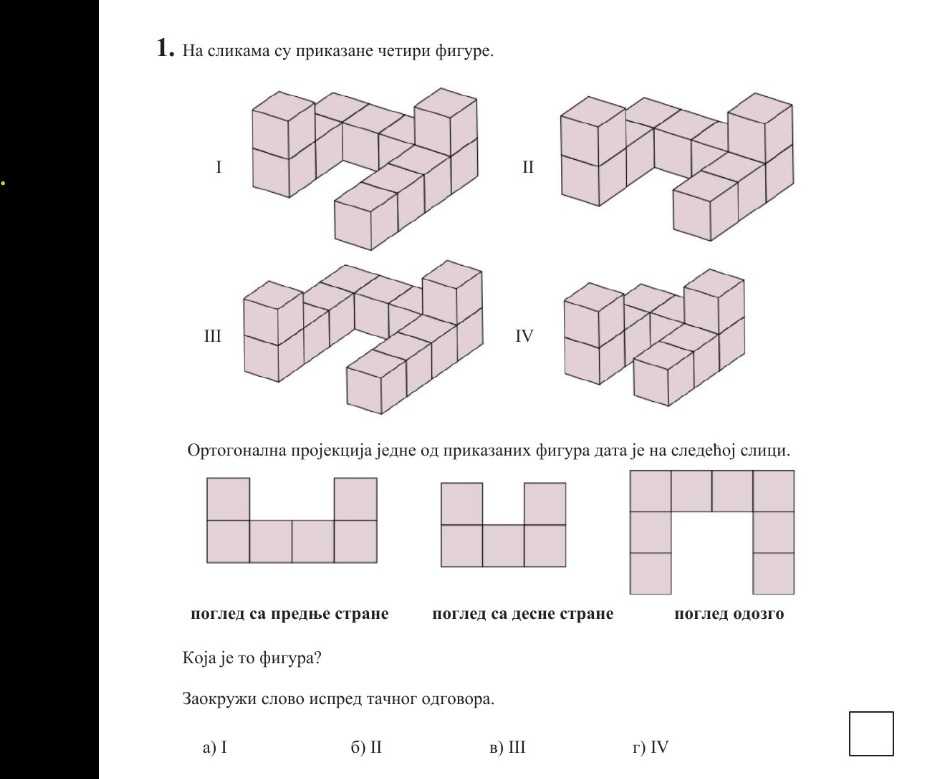


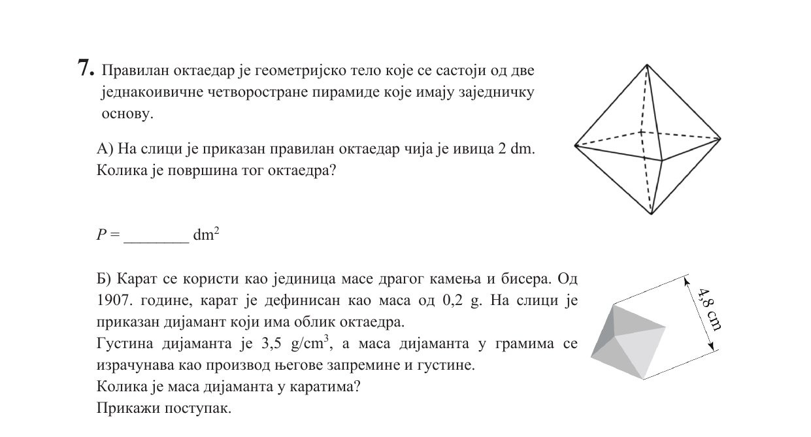
- ж + ц + п = 100 g
- ц + п + з = 101 g
- п + з + ж = 102 g
- з + ж + ц = 103 g

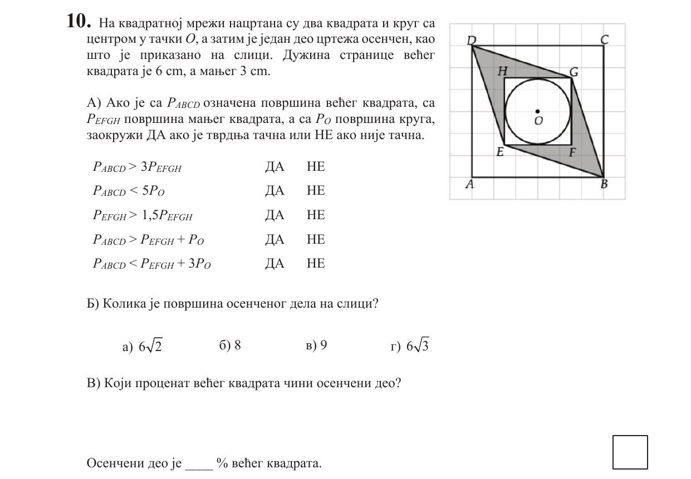
Петров индекс = 9. Подаци за Лазара, Дејана и Милоша дати у табели у задатку.
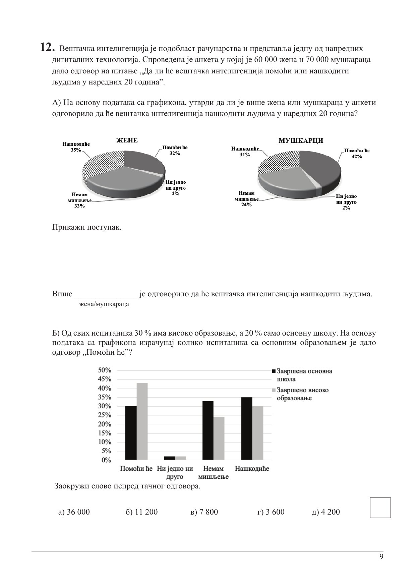
Тест 2023/2024. године

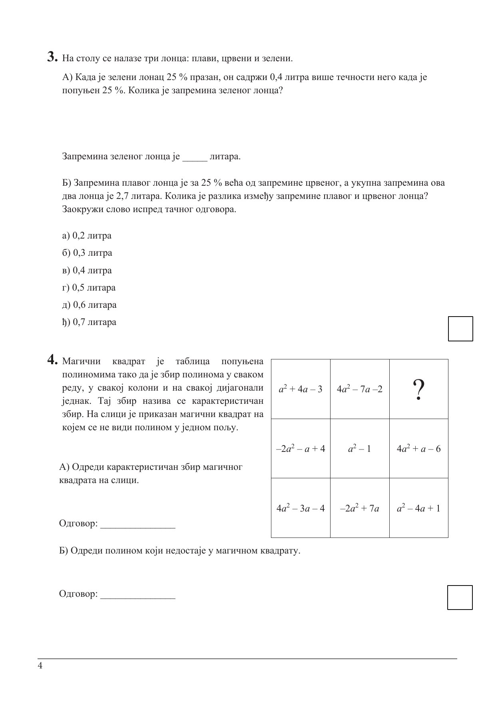


- Правило 1: Оба сарађују → (1, 1) — по 1 год. затвора
- Правило 2: М изда, Н не → (0, 20)
- Правило 3: Н изда, М не → (20, 0)
- Правило 4: Оба издају → (5, 5)
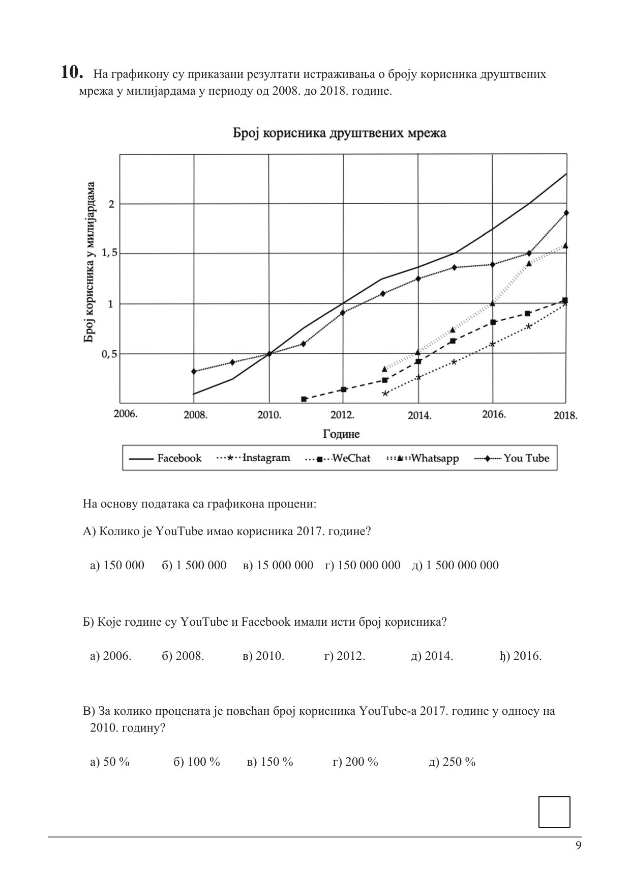
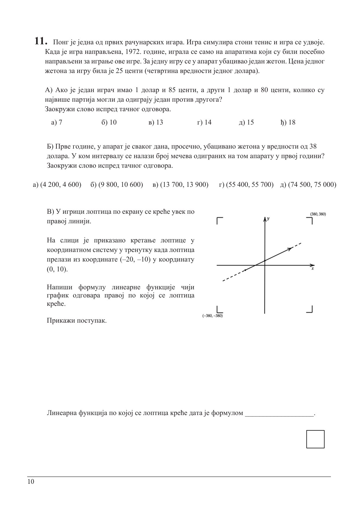
Пример: S = ··· → 1+1+1+1+1 = 5 с. O = −−− → 3+1+3+1+3 = 11 с. SOS = 5+3+11+3+5 = 27 с.
Тест 2022/2023. године
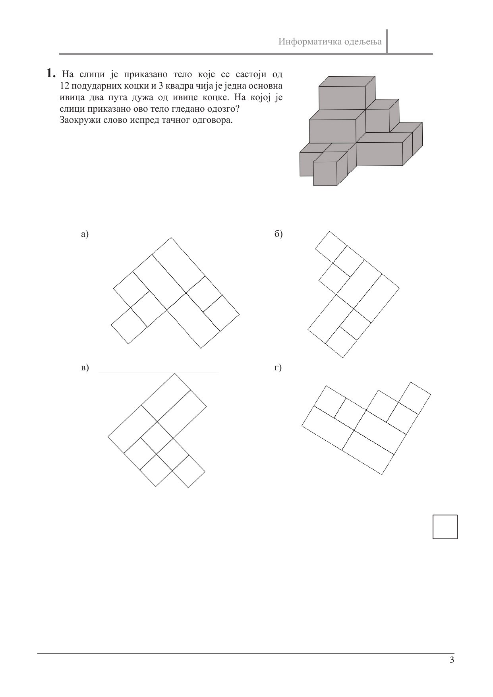
Тест 2021/2022. године

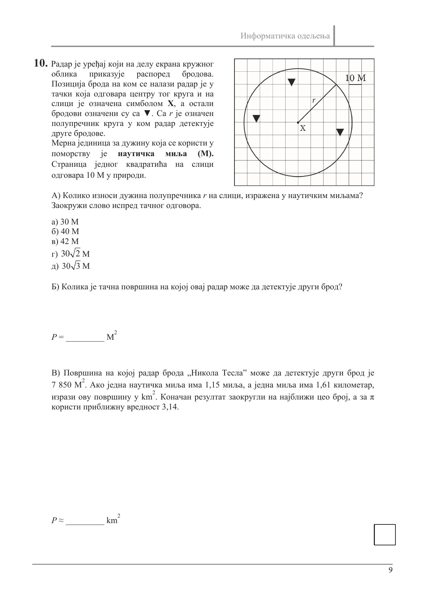
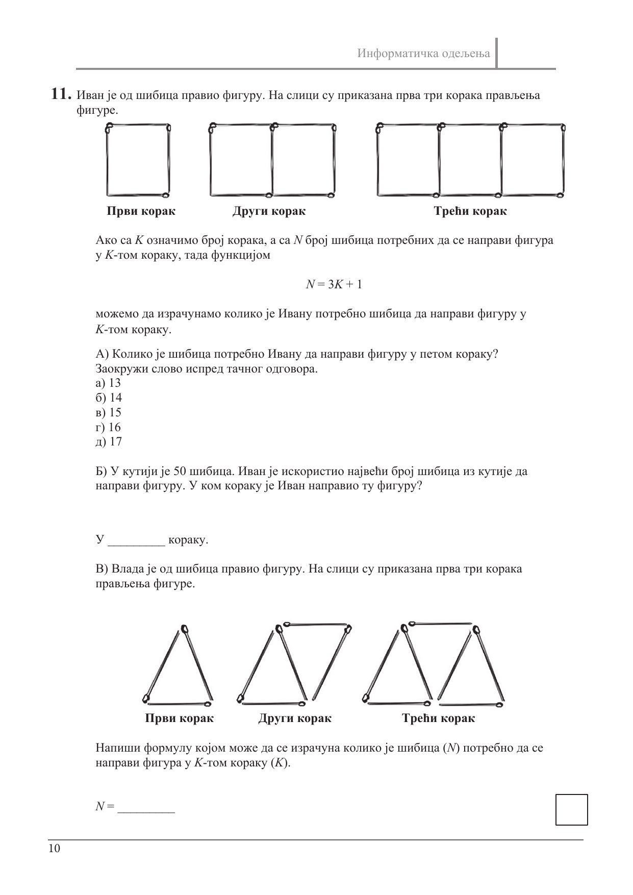
Тест 2020/2021. године
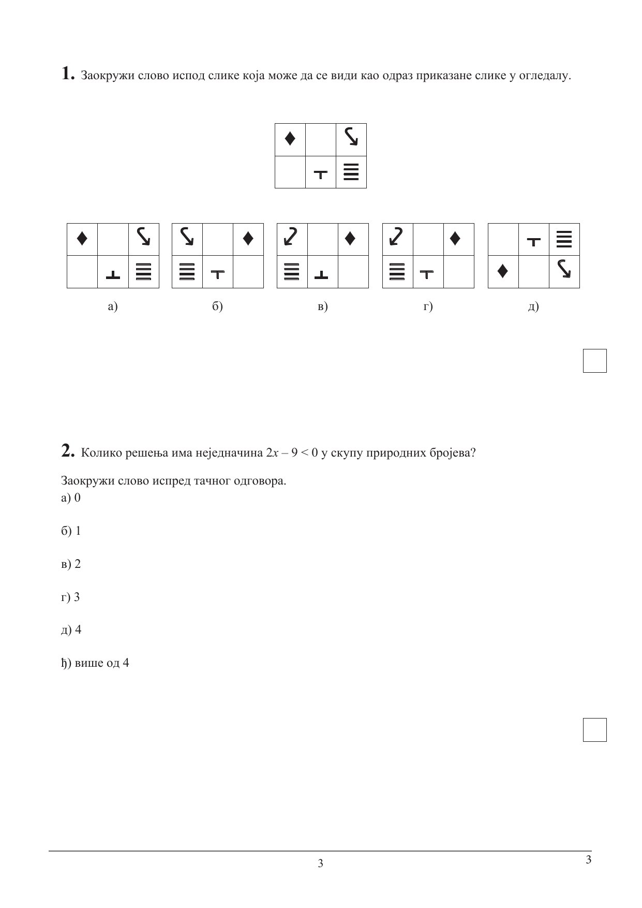
| Општина | Укупно | Ж мл. 24 | Женских |
|---|---|---|---|
| А | 18 432 | – | 9 485 |
| Б | 24 567 | – | 12 691 |
| В | 20 334 | 40 350 | 45 619 |
| Г | 15 231 | – | 7 688 |
| Д | 31 456 | – | 16 222 |
Формуле
Кружница
$P = r^2\pi$ | $O = 2r\pi$
Кружни прстен
$P = \pi(R^2 - r^2)$
Питагора
$c^2 = a^2 + b^2$
Правилни троугао
$P = \frac{a^2\sqrt{3}}{4}$
Коцка
$V = a^3$ | $d = a\sqrt{3}$
Октаедар
$P = 2a^2\sqrt{3}$
Кружни исечак
$P = \frac{\alpha}{360°} \cdot r^2\pi$
Средина — просек
$\bar{x} = \frac{\sum x_i}{n}$
Медијана
Средишња вредност сортираног низа
Промена у %
$\Delta\% = \frac{x_n - x_s}{x_s} \times 100\%$
Венов дијаграм
$|A\cup B| = |A|+|B|-|A\cap B|$
Растојање тачака
$d = \sqrt{(x_2-x_1)^2+(y_2-y_1)^2}$
Jedначина праве
$y = kx + n$ | $k = \frac{y_2-y_1}{x_2-x_1}$
Квадрат збира
$(a\pm b)^2 = a^2\pm 2ab+b^2$
Разлика квадрата
$a^2-b^2 = (a-b)(a+b)$
Дељивост са 9
Збир цифара дељив са 9